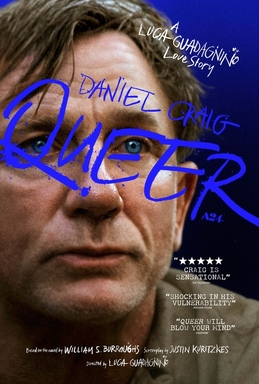

Poster of the film
Luca Guadagnino’s ninth feature film, Queer feels like a long, expensive photoshoot, high on the visuals and low on the substance. And speaking of substance, there is a lot of substance abuse in this adaptation of William S. Burroughs eponymous novel (published in 1985). Burroughs’ novella details the agony of an American junkie (the prequel to this novella) trying to seduce a fellow ex-Navy expat in Mexico in the 1950s. Luca retains the air of desperation and self-pity that permeates Burroughs’ story but hints at reciprocity of desire that is absent in the original. A signature of all Luca’s films is the futility of queer desire. The impossibility of it ever being fulfilled or expressed without acts of self-destruction and misery.
Just as in Call Me By Your Name (2017), queer desire is visceral, but also elusive, unstable, and almost, always fails at articulation or fulfillment. It is disruptive, unrequited and can never be dignified, ennobling or joyful. In Luca’s universe queer men don’t deserve joy.
With a sparse, stilted dialogue and a set of characters that feel like props, Queer, feels like a duet between Lee, played by the tortured and miserable Daniel Craig and Allerton, played by the blithe and inscrutable Drew Starkey. Craig squeezes, physically, all the desperation and longing a gay man in his fifties can project, and gives a performance that is tear-inducing, but equally self-absorbed and unsympathetic. Despite enormous suffering, Lee is not empathetic or even remotely interested or aware of the miseries of his fellow queer characters or their lives. It is the kind of suffering that is, unfortunately not interesting to see on screen. In the sense that it engenders a narcissistic fascination with the self, and not a sensitivity to the plights of others. There is something frighteningly lonely about Lee’s character, and it doesn’t add gravitas or sympathy just irate pity. Luca and Craig are both so busy showing and emoting Lee’s desperation we don’t get to understand anything about the character or its interiority. We just see a long denouement into madness and death. On the other hand, Starkey’s happy indifference is insufferable but perhaps its airy lightness is contrasted to Lee’s agonized position on queer love and desire.
The cartoonish quality of all the characters even extend to the expected Western racial stereotypes — Mexicans are depicted as swindlers, hustlers and apparently they are there to only serve Lee and his American entourage. Even the secrets of yage, the Amazonian plant that has long been involved in ritual ceremonies in South America, is only studied, and revealed by the odd American doctor who initiates both Craig and Starkey into its alternate reality. Of course because only white people can learn the secrets of altering consciousness and only they can transform that into knowledge that they alone can share with each other. And even when they do transcend their immediate reality, Craig and Starkey do the most cliched white thing ever. They do a contemporary dance, a la Pina Bausch. White people really have no chill.
It is infuriating to see the attention to detail that Luca gave to the visuals and production, the scenography and costumes and somehow that didn’t extend to the characters and the emotional coherence of the story. One can argue of course that Burroughs’ original story might have lacked coherence, but in Luca’s adaptation there is a certain flatness that creates an image saturated with visual mastery and empty of everything else.